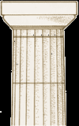
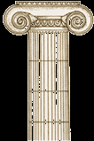
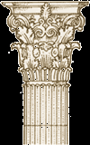
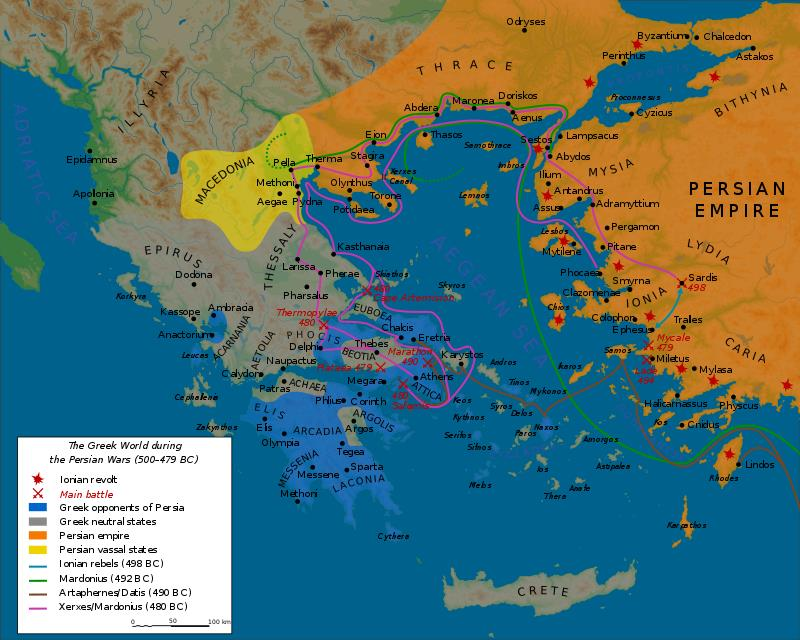

قاموس المرشد السياحي: الكلمات والمصطلحات التخصصية
💡 تنبيه للمرشد السياحي: هذه الكلمات تم استخراجها مباشرة من المرجع الأكاديمي، وتتكرر دائماً في أسئلة الامتحانات والمصطلحات الإرشادية. تم تزويد كل مصطلح بنطقه ومعناه الدقيق وتوظيفه السياقي:
المعنى بالعربي: «اليونانيون». وهو الاسم الذي أطلقه الإغريق القدماء على أنفسهم تكريماً لجدّهم الأسطوري (هيلين Hellen).
المعنى بالعربي: «بلاد اليونان». الاسم الأصلي لوطن الإغريق، بينما كلمة Greece اشتقت لاحقاً من التسمية الرومانية Graecai.
المعنى بالعربي: غير الناطقين باليونانية (الأعاجم). أصلها محاكاة صوتية لكلام الأجانب الذي كان يبدو للإغريق كأنه تمتمة غير مفهومة "بار بار".
المعنى بالعربي: الجماعات الهندو-أوروبية الأولى التي هاجرت إلى شبه الجزيرة اليونانية في فجر التاريخ (حوالي 2200 ق.م) وأسست الحضارة اللاحقة.
المعنى بالعربي: شبه جزيرة البيلوبونيز (جنوب اليونان). المركز الجغرافي لحضارة ميسينا وإسبرطة ومدن أرغوس وبيلوس.
المعنى بالعربي: العصور المظلمة اليونانية. سميت كذلك لندرة المصادر المكتوبة والآثار، وتفشي الفقر والانحدار السكاني والعزلة.
المعنى بالعربي: نظام سياسي مستقل تشكل فيه كل مدينة دولة ذات سيادة وجيش وقوانين خاصة بها (مثل أثينا وإسبرطة وطيبة).
المعنى بالعربي: الجزء العلوي المزخرف الذي يتوج بدن العمود المعماري، وهو العنصر الحاسم للتمييز بين الطرز المعمارية.
المعنى بالعربي: الزخرفة الحلزونية الملتفة التي تشبه لفائف البردي أو قرون الكبش، وهي السمة المميزة لتاج العمود الأيوني (Ionic).
المعنى بالعربي: نبات شوكي متوسطي (شوكة اليهود)، تم استلهام أوراقه الزخرفية المنحوتة لتزيين تاج العمود الكورنثي (Corinthian).
المعنى بالعربي: مذهب ديني يقوم على الإيمان بآلهة متعددة وتخصيص رب لكل ظاهرة طبيعية أو نشاط إنساني.
المعنى بالعربي: الحقبة الممتدة من وفاة الإسكندر (323 ق.م) حتى سقوط مصر الروماني (31 ق.م)، وتميزت بامتزاج الثقافة الإغريقية بالشرقية.
هوية اليونان القديمة ومفهوم Barbaros (الأعاجم والبرابرة)
«أطلق اليونانيون القدماء على أنفسهم اسم الهيلينيين (Hellenes)، وعلى وطنهم اسم هيلاس (Hellas)، وحينما جاء الرومان أطلقوا على اليونانيين اسم جرايكاي (Graecai) ومنه اشتق اسم اليونان الحالي. وكان اليونانيون يطلقون على أي شخص لغته الأم ليست اليونانية لقب "بارباروس (Barbaros)"، وهذا المصطلح لم يكن يعني "بربرياً" بالمعنى المعاصر المتوحش، بل كان يعني ببساطة الأشخاص الذين تصدر عنهم أصوات غير مفهومة تشبه تمتمة "بار بار" بدلاً من التحدث باليونانية الفصيحة».
"The ancient Greeks called themselves as Hellenes (اليونانيون), and their country as Hellas (اليونان), when the Roman came, they called the Greek as Graecai. The Greeks called anyone whose native tongue was not Greek by 'barbaros'. The term does not mean barbarians in the modern sense*, it simply means people who make noises like 'bar bar', instead of speaking Greek."
تخيل أنك مواطن يوناني يعيش في أثينا قبل 2500 عام؛ كان الإغريق يشعرون بفوقية ثقافية واعتزاز لا مثيل له بلغتهم وفلسفتهم وشعرهم. ولأنهم لم يكونوا يفهمون لغات الشعوب الأخرى كالمصريين أو الفرس، كانت تبدو لهم كل اللغات الأجنبية كأنها ثرثرة متكررة على وزن «بار... بار... بار»! ومن هنا ابتكروا كلمة «بارباروس». وحتى عندما كان المصريون أعظم حضارة على وجه الأرض بعمارتهم وعلومهم، أطلق عليهم الإغريق هذا اللفظ من منظور لغوي فقط وليس انتقاصاً من حضارتهم. وعندما احتل الرومان بلادهم لاحقاً، أخذوا هذا المصطلح وحولوه في اللاتينية إلى المعنى السلبي الذي نعرفه اليوم (الهمجية والتوحش).
هجرات العصر البرونزي: الحضارة الميسينية وعصر الظلمات
• أول جماعات هاجرت إلى شبه الجزيرة اليونانية كانوا اليونانيين الأوائل (Proto-Greek) حوالي عام 2200 ق.م.
• حققوا تقدماً هائلاً في العصر البرونزي المتأخر (بين 1400 و1200 ق.م)، وعرفت هذه الحقبة باسم الحضارة الميسينية (Mycenaean Civilization).
• أهم مراكزها وقلاعها كانت: ميسينا (Mycenae)، أرغوس (Argos)، وبيلوس (Pylos) وتقع جميعها في الجزء الجنوبي من اليونان المعروف بـ البيلوبونيز (Peloponnese).
• انتهت حضارة ميسينا حوالي 1200 ق.م بدمار هائل لحق بقصورها المحصنة إثر غزو شعوب البحر (The Sea People)، ودخلت البلاد بعدها في عصر الظلمات (Dark Age) لمدة 400 عام لغياب السجلات التاريخية.
"The first people migrated into the Greek Peninsula (شبه جزيرة يونانية) were the proto-Greek, perhaps as early as 2200 BC. Whatever their cultural level when they entered, they advanced in the Bronze Age (1400-1200 BC), which period was called Mycenaean civilization.
The main centres of the Mycenaean civilization were Mycenae, Argos, and Pylos which situated in the southern part of Greece called Peloponnese.
About 1200 BC Mycenaean civilization came to an end, marked by the destruction of the palace fortresses in many parts of Greece. It was invaded by the sea people. The following four hundred years were a Dark Age, because we know so little about it."
حضارة ميسينا هذه هي صاحبة أساطير حرب طروادة وقصة حصان طروادة الشهيرة التي كتبها الشاعر هوميروس في الإلياذة! كان ملوك ميسينا يعيشون في قلاع صخرية جبارة تسمى القصور المحصنة. لكن فجأة حوالي عام 1200 ق.م، ضرب البحر المتوسط طوفان بشري غامض ومرعب عُرف بـ «شعوب البحر» (وهم نفس الغزاة الذين تصدى لهم الملك المصري رمسيس الثالث في مصر بحراً وبراً). أحرقت هذه الشعوب قلاع ميسينا وسوتها بالأرض، مما تسبب في انهيار اقتصادي شامل وسقوط اليونان في نوم عميق وفقر وعزلة تامة استمرت 4 قرون كاملة سميت «العصر المظلم» حتى عاد اليونانيون للبناء من جديد.
شعوب البحر والفرعان الأساسيان لليونان: الأيونيون والدوريون
"Between 1000 and 500 BC, new people living around the Mediterranean Sea became civilized. They organized themselves into city-states. Their origin from the Carthaginians, the Etruscans and the Hellenes.
The Hellenes: The Hellenes were a mixed people consisting of two main groups of ancestors who differed physically and culturally. They included people of Crete, Cyprus, and Phoenicia, most of whom were distinguished by rather delicate small bone structure, coppery skin that easily took on brownish-red tones when exposed to the sun and larger dark eyes.
A- Ionians: They had blond hair, grey or blue eyes and they were mixed with the local people or ancient settlers (original inhabitants), as a result of this also, they were more civilized than the Dorians. Ionians were the most gifted in commerce, art, culture and philosophy. Their main city was Athens.
B- Dorians: The Dorians were quite different. They settled chiefly in the Peloponnesus and their main city was Sparta. They were much more conservative than the Ionians. They had dark skin, dark eyes, dark hair and they were excellent and brave warriors."
أهل الفلسفة والتجارة والفنون
عاصمتهم الرئيسية: أثينا (Athens) 🏛️- ✓ الصفات الشكلية: شعر أشقر (blond hair)، عيون رمادية أو زرقاء (grey or blue eyes).
- ✓ الأصل والتزاوج: اختلطوا مع السكان الأصليين الأوائل لشبه الجزيرة.
- ✓ السمة الحضارية: أكثر تحضراً ورُقياً (More civilized than Dorians).
- ✓ الموهبة والنشاط: موهوبون جداً في التجارة البحرية، الفنون، الثقافة، والفلسفة.
أهل القوة والفروسية والمحافظة
عاصمتهم الرئيسية: إسبرطة (Sparta) 🛡️- ✓ الصفات الشكلية: بشرة داكنة، عيون داكنة، وشعر أسود داكن (Dark skin, eyes & hair).
- ✓ موقع الاستقرار: استقروا أساساً في شبه جزيرة البيلوبونيز.
- ✓ السمة الفكرية: أكثر تحفظاً وتشدداً بكثير من الأيونيين (Much more conservative).
- ✓ الموهبة والنشاط: محاربون بواسل وممتازون وشديدو الانضباط العسكري (Brave warriors).
هذا الانقسام بين الأيونيين والدوريين هو مفتاح فهم تاريخ اليونان بأكمله! أثينا (الأيونية) كانت أشبه بنيويورك أو باريس القديمة؛ موانئ تجارية مفتوحة على العالم، وفلاسفة يجادلون في الأسواق مثل سقراط، ومسارح وموسيقى. أما إسبرطة (الدورية) فكانت معسكراً عسكرياً مغلقاً لا يعرف الرفاهية؛ يؤخذ الطفل في سن السابعة من أمه ليتعلم القتال والتحمل، ولا قيمة للفرد إلا كجندي يدافع عن الدولة! هذا التنافس الشرس بين الثقافتين هو الذي فجّر لاحقاً «حرب البيلوبونيز» الشهيرة التي أنهكت اليونان ومهدت الطريق لظهور مقدونيا بقيادة فيليب الثاني وابنه الإسكندر الأكبر.
الطرز المعمارية اليونانية الكلاسيكية (Classical Architectural Styles)

الطراز الدوري (Doric)
تاج بسيط وبدن قوي متين• شكل التاج (Capital): بسيط وأملس وخالٍ من الزخارف (Plain).
• البدن: قوي وغليظ ومتين (Rather sturdy) يعبر عن البأس والقوة.
• أماكن الاستخدام: بر اليونان الرئيسي (Mainland Greece) والمستعمرات اليونانية في جنوب إيطاليا وجزيرة صقلية (Sicily).

الطراز الأيوني (Ionic)
رشيق بتاج حلزوني كقرون الكبش• شكل التاج (Capital): مزخرف بلفائف حلزونية تشبه قرون الكبش أو اللفافة المطوية وتسمى (Volute).
• البدن: أكثر نحافة ورشاقة وأناقة (Thinner & more elegant).
• أماكن الاستخدام: شرق بلاد اليونان وجزر بحر إيجة وسواحل آسيا الصغرى.

الطراز الكورنثي (Corinthian)
تاج فخم بأوراق نبات الأكانثوس• شكل التاج (Capital): غاية في الفخامة والدقة والتفصيل (Very elaborate) ومزخرف بصفين من أوراق الأكانثوس (Acanthus leaves).
• الاستخدام اليوناني: نادراً ما استخدمه الإغريق (Seldom used in Greek world).
• الاستخدام الروماني: عشقه الرومان وكان طرازهم المفضل في المعابد والمباني الفخمة في روما ومصر ومستعمراتهم.
الأعمدة في العمارة الكلاسيكية لم تكن مجرد أحجار ترفع الأسقف، بل كانت تعبيراً بصرياً عن فلسفة كل مجتمع! عمود الدوري البسيط الخشن يشبه الرجل المحارب الإسبرطي القوي بلا تكلف. وعمود الأيوني الرشيق ذو الحلزونات يشبه السيدة الأنيقة أو لفافة الشعر اليونانية ويعكس رقة وفلسفة أثينا وجزر إيجة. أما الطراز الكورنثي، فتقول الأسطورة إن مهندساً رأى سلة نذور وضعت على قبر فتاة صغيرة ونبت حولها نبات الأكانثوس البري والتفت أوراقه حول السلة، فاستوحى منها هذا التاج فائق الجمال! ولأن الرومان كانوا يعشقون العظمة والإبهار البصري، جعلوا التاج الكورنثي أيقونتهم الرسمية التي ستراها في كل آثار العصر الروماني بمصر.
العقيدة اليونانية ومجمع آلهة جبل أوليمبوس (The Gods of Olympus)
"After the collapse of Bronze Age, the Hellenes were Polytheistic (متعدد الآلهة) people, they worshiped many gods. They believed that every tree, flower, weed, sky and earth was inhabited by a spirit. The gods were pictured in human form resembled human beings in every way except that they had superhuman powers and immortality.
Besides the Olympic gods, there were many local deities presiding over household and daily activities who were closely associated with the immediate locality.
Worship was not private affair in ancient Hellas; it was the concern of the whole community. The gods were honoured at an open altar in ceremonies that had been handed down for generations."
⚡ آلهة الأوليمبوس الـ ١٢ المذكورين في المقرر:
King of the gods: إله السماء والرعد والصواعق، الحاكم الأعلى لجبل أوليمبوس في الميثولوجيا اليونانية.
Wife of Zeus: زوجة الإله زيوس، وربة الأمومة والزواج والأسرة والوفاء الزوجي.
Patron goddess of Athens: الربة الراعية لمدينة أثينا، وربة الحكمة والفضيلة والاستراتيجية الحربية العادلة.
God of sun & light: إله الشمس والنور، والموسيقى والشعر، وإله الطب والشفاء (Healing).
Sister of Apollo: أخت أبوللو التوأم، ربة الصيد والبرية والغابات (The woods) والقمر.
Goddess of beauty: ربة الحب والجمال والجاذبية في الأساطير اليونانية (يقابلها فينوس عند الرومان).
Brother of Zeus: شقيق زيوس، إله البحار والمحيطات والعواصف والزلازل والخيول (بيده الشوكة الثلاثية).
God of war & battle: إله الحرب الدموية والمعارك الشرسة والعنف البدني (يقابله مارس Mars عند الرومان).
God of grape harvest: إله حصاد العنب وصناعة النبيذ والاحتفالات والمسرح والنشوة الروحية.
Messenger of gods: رسول الآلهة المجنح، وإله الحدود والتجارة والمسافرين والذكاء وحامي الطرق.
God of blacksmiths & fire: إله النار والصنّاع والحدادين ومهندس أسلحة الآلهة ودروعها.
God of underworld: شقيق زيوس وبوسيدون، حاكم عالم الموتى والعالم السفلي في الديانة اليونانية.
على عكس الآلهة المصرية التي كانت تمثل في هيئات مركبة (رأس صقر أو أنوبيس رأس ابن آوى)، تخيل اليونانيون آلهتهم بشراً كاملين تماماً، يأكلون ويشربون ويغارون ويتشاجرون ويعشقون، لكن الفارق الوحيد هو أنهم يمتلكون «قوى خارقة وخلوداً لا ينتهي»! والأهم للمرشد السياحي: أن عبادة الآلهة في اليونان لم تكن طقساً فردياً في غرف مغلقة، بل كانت واجباً وطنياً مجتمعياً يُقام على مذابح مكشوفة أمام المعابد بحضور كل أبناء المدينة. هذا المفهوم سيندمج لاحقاً في مصر عندما يأتي بطليموس الأول ويخلق الإله المزدوج «سيرابيس» الذي يجمع ملامح زيوس وهاديس اليونانيين مع أوزوريس وآبيس المصريين!
الحقب والعصور الأربعة الكبرى لتاريخ اليونان (Periods of Greek History)
1. (Dark Age): 1200 BC - 800/750 BC: After the collapse of the Mycenaean civilization in 1100 BC, Greek cities entered the Dark Ages characterized by population decline (الانحدار السكاني), impoverishment (الفقر), and isolation (العزلة). Little is known about art in Greece during this period.
2. Archaic Period: 800/750 BC - 550/500 BC: Greek artisans made proto-geometric pottery with abstract designs. By the sixth century BC, Greek art exemplified by the black-figure style of vase painting with abstract designs. The human figure appeared in Greek art after the Dark Ages with abstract design.
3. The Classical Period or the Hellenic Period: 550 or 500 BC to 334 or 323 BC: That is the fifth and fourth centuries BC, the period of the independent city-states, which is considered as the greater cultural achievements in Greek history.
4. The Hellenistic Period: 323 BC to 31 BC: From the death of Alexander the Great (323 BC) to the time of the Roman conquest of the eastern Mediterranean at the Battle of Actium (31 BC).
عصر الظلمات (The Dark Age)
انحدار سكاني حاد، وتدهور اقتصادي وفقر، وانعزال تام عن العالم الخارجي بعد دمار حضارة ميسينا.
العصر العتيق / الآركي (The Archaic Period)
ولادة الفخار الهندسي المبكر، وظهور طراز الأواني ذات الأشكال السوداء (Black-figure style)، وبداية ظهور الجسد البشري في الفنون.
العصر الكلاسيكي أو الهيليني (The Classical / Hellenic Period)
القرنان الخامس والرابع ق.م؛ عصر سيادة دُوَل المدن المستقلة (أثينا وإسبرطة)، وأعظم ذروة فكرية وثقافية وفلسفية في تاريخ اليونان.
العصر الهيلينستي (The Hellenistic Period)
يبدأ من وفاة الإسكندر الأكبر (323 ق.م) وتأسيس دولة البطالمة في مصر، حتى هزيمة كليوباترا السابعة في أكتيوم واحتلال الرومان لمصر (31 ق.م).

المسرح الجغرافي للحروب الفارسية والتحول الكلاسيكي
توضح هذه الخريطة المأخوذة من مرجع الكلية شبه الجزيرة اليونانية وبحر إيجة المحاط بمدن الأيونيين شرقاً في آسيا الصغرى (أيونيا وكاريا) والمدن الهيلينية غرباً. كانت هذه الرقعة الجغرافية مسرحاً للصراع الملحمي بين الإمبراطورية الفارسية الأخمينية ودول المدن اليونانية، وهو الصراع الذي وحّد اليونانيين مؤقتاً ومكّنهم من صد الغزو الفارسي، مما مهد الطريق للنهضة الكلاسيكية ثم خروج الإسكندر الأكبر لغزو الإمبراطورية الفارسية نفسها وتحرير مصر عام 332 ق.م!
تأمل هذه الرحلة التاريخية المدهشة: اليونان بدأت كجماعات رعوية متواضعة، بنت حضارة ميسينا الذهبية ثم هوت إلى هاوية الفقر والعزلة التامة في العصر المظلم لمدة 400 سنة. لكن من قلب هذا الركام، اشتعلت شرارة الإبداع في العصر العتيق من خلال الفنون والرسم على الفخار، لتنفجر بعدها في العصر الكلاسيكي بأعظم عقول الفلسفة والديمقراطية في أثينا وبسالة الجند في إسبرطة. وحينما أنهكت الحروب الأهلية اليونانيين، جاء مقدوني عبقري اسمه الإسكندر الأكبر نقل الثقافة اليونانية من حدود مدنها الضيقة إلى قلب مصر والشرق في «العصر الهيلينستي»، لتولد الإسكندرية أعظم عواصم العالم القديم!
بنك الأسئلة التفاعلي: اختبر فهمك للمحاضرة الأولى
المحاضرة الثانية: صعود مقدونيا والملك فيليب الثاني
دراسة ظهور المملكة المقدونية، الملك فيليب الثاني، ابتكار كتيبة الفيلانكس (Phalanx)، زواجه من أوليمبياس، وطرق إخضاع بلاد اليونان حتى مقتله عام 336 ق.م.